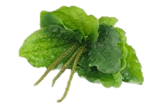

TÉ DE YANDEN
¿Qué es la planta de yanden?
El yanden es una planta considerada una planta sumamente apreciada gracias a sus increíbles propiedades medicinales y a raíz de su versatilidad en la cocina. Sin embargo, en la actualidad, muchos desconocen sus bondadosas características y frecuentemente se la confunde con una maleza. No obstante, es muy importante destacar su magia e importancia a la hora de funcionar como un desintoxicante para el organismo. 
Te ofrecemos el mejor té acá en Te Medicinal Mendoza con grandes propiedades para la mejora de tu salud y de toda tu familia.
TÉ DE YANDEN
¿PARA QUE NOS SIRVE?
Sirve para tratar la gripe, resfriados e inflamaciones, principalmente en las vías aéreas y tubo digestivo, además de su prevenir el surgimiento de úlceras, diarreas y ayudar a controlar el azúcar en sangre.
Al igual que ayuda a controlar el dolor de "gastritis".
INGREDIENTES:
1.-Hojas de yanden
2.-Los palos de la planta del yanden